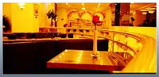
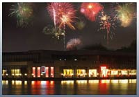

首页 >> 酒店

逸风商务酒店
是由香港著名设计师按照四星级酒店标准设计、装潢的酒店，硬件设施完善。酒店设有商务大床房、商务标准房、逸风特设房（圆床）豪华套房等，一共108间，建筑面积逾6000平方米，每间房内配有免费宽带上网功能，免费市话，免费国内长途及IPTV电视、设有商务中心，养生会所、棋牌室、咖啡吧、中小型会议室、并有中西自足早餐，给人宾至如归的感觉。
逸风商务酒店处于普陀区长风生态商务区，位于大渡河646号，毗邻中环高架，距明珠三号线步行约10分钟，到上海火车站仅5公里，距虹桥机场车程约20分钟，酒店附近交通便捷，有数十条公交线路及轨道交通，与内环线和中环线高架相连，出行便捷，距长风公园商圈不到1公里，距中山公园商圈、虹桥开发区仅3公里。
酒店毗邻长风生态商务区，附近有完善的商业网点，各类银行，肯德基，麦当劳，各类中型超市，酒楼，特色餐饮店，宝货店，成熟商业街，配套服务一应具全。 逸风商务酒店全体员工期待着您的光临！

海上宴餐厅
位于市区长风公园4号门内，临湖而建，风光旖旎，营业面积1333平方米，三面环湖，另有1000多平米的室外观景露台及二楼300平方米露天观景台,可同时容纳199人就餐，可承接中等规模的喜宴和时尚party及新产品发表会。
海上宴餐厅以海文化为主题，以不同海域特产为卖点，以创新海蔘为特色，以无敌水景为硬件，以五星服务为软件，打造中国第一海鲜餐饮品牌。
海上宴地处上海市长风生态商务区，该区域与虹桥古北CBD一桥之隔，区域内有两家五星级酒店在建，30多万平米的高档写字楼即将建成，美国米高梅娱乐中心、上海游艇会亦落户此地，该区域是上海最具潜力的核心商务区。海上宴毗邻苏州河游艇会，海上宴除与游艇会（上海唯一的游艇会）达成战略合作意向外，更与时尚媒体《大都市》达成战略合作联盟，《大都市》作为海上宴的指定杂志，而海上宴作为《大都市》的指定餐厅承接各种时尚party，名品发布，高尔夫、游艇会等相关的颁奖典礼等。
穿过曲径通幽的长廊，一路可以饱览由著名陶艺大师、山东籍艺术家汉方先生寓意海上丰收的"海姑"陶塑和著名漫画家纪兵先生为"海上宴"度身绘制的"八仙过海——通达"和"小宝多情——通吃"的仿青铜浮雕，脍炙人口的传说和小说为奢华的餐厅平添了一份难得的雅俗共赏的乐趣。在欣赏了惟妙惟肖的浮雕后，则到了海上宴著名的"通吃厅"和"通达厅"。两厅中间安有移门木隔栅，可因不同的场合灵活变换空间的大小，包间同时还设有舒适温馨的休息区域，简洁大方的沙发，传统碎花的靠垫，以及沙发上方各式仿古青铜摆件，再次完美呈现了餐厅低调奢华的古典韵味。
大厅部分可摆放12-15桌,适合中小型婚宴及私人派对。户外露天阳台可举行150-200人中型鸡尾酒会,适合各类型发表会二楼露天阳台可举行100人左右小型BBQ Party,餐厅内设有三个豪华包房,适合小型私人聚会。
奢华，典雅，浪漫，神秘的情调弥漫着整个"宴上海"，古朴，低调、简约、大方的设计风格渗透着整个"海上宴"。